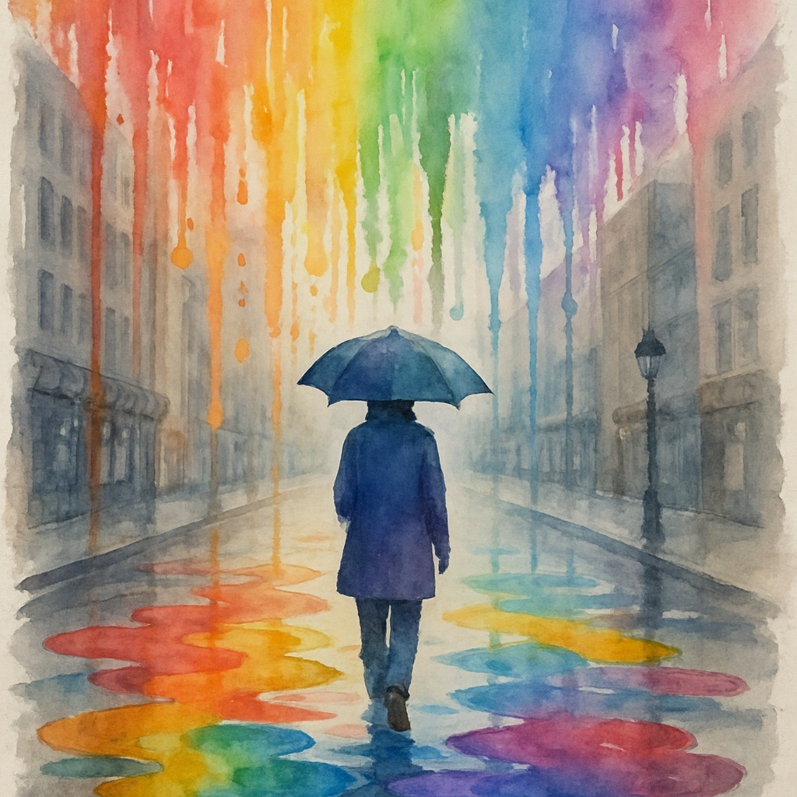

See sleep-stage context
Understand whether a dream lined up with REM, deep, or light sleep.
Now live on the App Store
Dreamside helps you capture dreams while they’re still fresh, connect them to REM, deep, and light sleep, and notice the symbols, emotions, and patterns that keep coming back.

Dreamside helps connect dream recall with actual sleep patterns, so you can finally see why some dreams stay vivid and others disappear by breakfast.
What it does
Dreamside is built for people who already know dreams feel different depending on the night. Instead of just storing entries, it helps you line them up with sleep stages, track recurring signs, and build a clearer picture over time.
Understand whether a dream lined up with REM, deep, or light sleep.
Spot symbols, themes, emotions, and patterns that keep resurfacing.
Look at your dreams through multiple lenses without locking yourself into one worldview.
Turn memorable dreams into visual artifacts that feel worth keeping.
Why it stands out
If you already track sleep, Dreamside turns that data into something personal instead of leaving it as a chart you forget about.
It gives your entries structure, context, and a better shot at becoming an actual pattern instead of isolated notes.
It creates a better foundation for noticing what conditions make dream recall stronger or stranger.
Screenshots
A look at Dreamside’s journaling flow, sleep-stage context, visual outputs, and pattern-tracking surfaces.
What’s next
No, but that’s where Dreamside gets most of its power. You can still journal dreams without one, but the sleep-stage context is the differentiator.
Most dream journals help you capture the dream. Dreamside helps you connect dream recall to actual sleep patterns over time, especially if you already use Apple Watch for sleep tracking.
No. Some people use it because they already track sleep and want their data to mean something. Others just want a better way to remember and reflect on their dreams. It works either way.
Yes. Dreamside is designed around private journaling, on-device use, and secure sync rather than social sharing by default.
Ready to try it?
Your Apple Watch is already logging the night. Dreamside gives that data something worth saying.